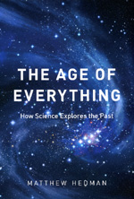
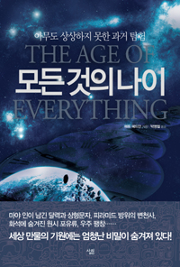

The Age of Everything
How Science Explores the Past


This very minimal web-page is just a place to compile material related to
the book The Age of Everything: How Science Explores the Past which is being published by the
University of Chicago Press (and is also available at Amazon,
Barnes&Noble,
Powells, etc.).
The book has been translated into Spanish by Editorial
Crítica. The Spanish version is entitled "Orígenes:
La datación científica del pasado" and is available
here.
More recently, the book was translated into Korean by Sallim Books, and
information about this edition can be found
here.
Reviews
Some nice reviews of the book have appeared in a few places:
Anthony Doerr in the Boston Globe
Steve Goddard's History Wire
Steven Poole in the Gaurdian
J. Stephen Daly in The Paleontology Newsletter (see page 88)
Scienceagogo.com
R.E. Kelly IV in Choice (Can be read on-line through the
New York Public Library website)
R. Dejaiffe in Ciel et Terre
(Rough translation from the French here)
R. Stearley in Perspectives on Science and Christian Faith
D. Kay in Cosmos Magazine
R. Hoots for the National Science Teachers Association
Pascual Tamburri Bariain for el semanal digital.com
(of the spanish
translation, Rough translation from the Spanish here)
And a more critical review may be found here:
John Gribbin in the Independent
Background, Updates, Errata and Miscellany
Here is a copy of the
slides and lecture notes for the 2004
Compton Lectures that formed the basis for the book. I
warn any reader that this stuff is pretty raw and it contains some glitches
that got ironed out in the book. I also apologize for the really cruddy
HTML formatting of the slides.
I started each of the lectures with a little cartoon to remind myself and
my audience that I am not an authority on many of the subjects I
discussed. I made similar cartoons to introduce each chapter of the book,
but the consensus was that they were a little too cute and so they were
dropped from the published book. For the curious, copies of those cartoons
can be found here.
As I state in the introduction to the book, the subjects I cover are
areas of active research, so I will post updates here on new findings
that are relevant to the discussions in the book.
Finally, for the nit-pickers out there, here is an Erratum for the book. Most of the
typos listed here were fixed in the paperback version of the book.